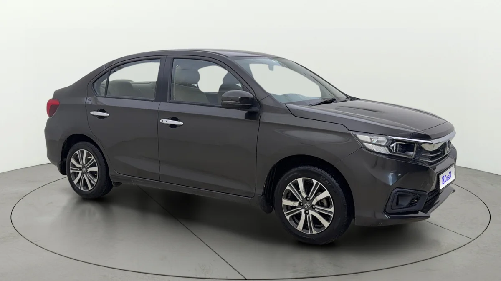

Vehicle record
Honda Amaze
1.2L i-VTEC VX
2022 · Petrol · Manual · HR ** ** 8524
24 Nov 2026 · VIB-SAMPLE-20261124-10

Reference vehicle photograph · 4 photos in this file
Report sections8 sections
Good condition score
Review the evidence and inspect the car.
Sample condition score · preset for this report previewThings to review
Vehicle photos
Put a face to the file.
Start with the exterior and cabin. Photos help you spot what to ask about when you see the car.
CARS24 listing photographs, retrieved 24 Nov 2026. Capture dates are unavailable. These reference photos are not evidence of the repair history below.
Mileage & service
Do the readings tell the same story?
Compare service entries with the seller’s declared mileage. A discrepancy is a reason to investigate.
No decrease in the available readings. Missing records can still leave gaps.
Choose a dated reading to see its source.
20 Nov 2026 · Seller declaration · 48,800 km
| Date / reading | Work / source | Invoice |
|---|---|---|
| 8 Jul 2022 9,200 km | Engine oil, oil filter and general checksHonda service centre · Gurugram · amaze-svc-1 | ₹4,400 |
| 8 Jul 2023 18,400 km | Air filter, brake cleaning and fluid checksHonda service centre · Gurugram · amaze-svc-2 | ₹5,050 |
| 8 Jul 2024 27,600 km | Engine oil, oil filter and general checksHonda service centre · Gurugram · amaze-svc-3 | ₹5,700 |
| 8 Jul 2025 36,800 km | Air filter, brake cleaning and fluid checksHonda service centre · Gurugram · amaze-svc-4 | ₹6,350 |
| 8 Jul 2026 46,000 km | Engine oil, oil filter and general checksHonda service centre · Gurugram · amaze-svc-5 | ₹7,000 |
Identity & ownership
Make sure the details match the car.
Review registration, vehicle specifications and ownership information before discussing a transfer.
Ownership trail
Finance & transfer
An active entry deserves a closer look.
A lender entry can matter at transfer. Ask for closure documents and verify the current status.
Insurance & claims
See the record. Understand its limits.
A claim can prompt useful questions. Its amount alone does not establish accident severity or today’s condition.
Condition records
Challans & compliance
Know what needs attention before transfer.
Review available challans and document validity. Check the latest status with the seller and the relevant source.
Market context
Bring context to the asking price.
Read a reference range alongside previous asking prices. An estimate starts a conversation; it is not an offer.
Honda Amaze · 2022 · Gurugram
A reference range for this sample. It is not a live valuation or an offer.
Previous asking prices
Asking prices are not completed-sale prices. Comparable sales and peer ranking are unavailable.
The complete timeline
Read the dates together.
Registration, service, repair and sale records in one sequence. Gaps remain visible.
First registration
Gurugram, Haryana · ownership begins
Service visit
9,200 km · Engine oil, oil filter and general checks
Service visit
18,400 km · Air filter, brake cleaning and fluid checks
Service visit
27,600 km · Engine oil, oil filter and general checks
Ownership transfer
Second owner recorded
Service visit
36,800 km · Air filter, brake cleaning and fluid checks
Repair claim settled
₹31,000 · Rear bumper and paint
Asking price recorded
₹7,80,000
Service visit
46,000 km · Engine oil, oil filter and general checks
Asking price recorded
₹7,40,000
Seller mileage declaration
48,800 km
Know what is still missing.
Read the available records with the car, its documents and a physical inspection.
Sample vehicle histories, amounts and outcomes are fictional. Photos show a model-matched reference car from a CARS24 listing; they do not verify these histories.